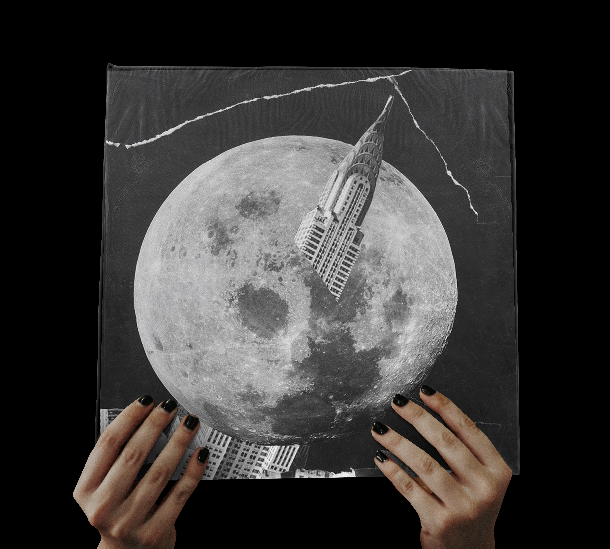
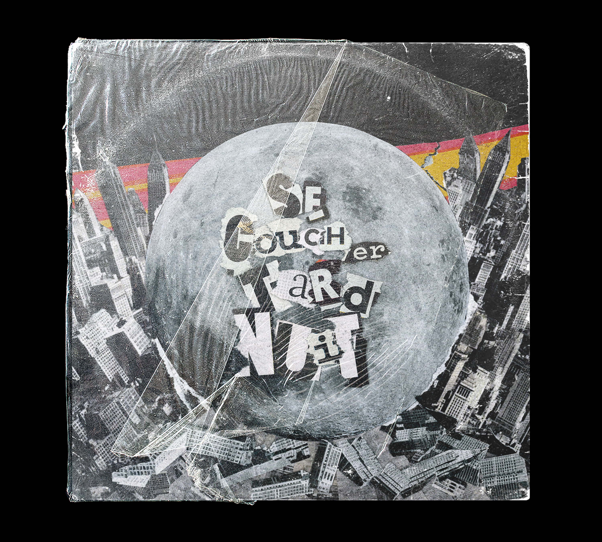
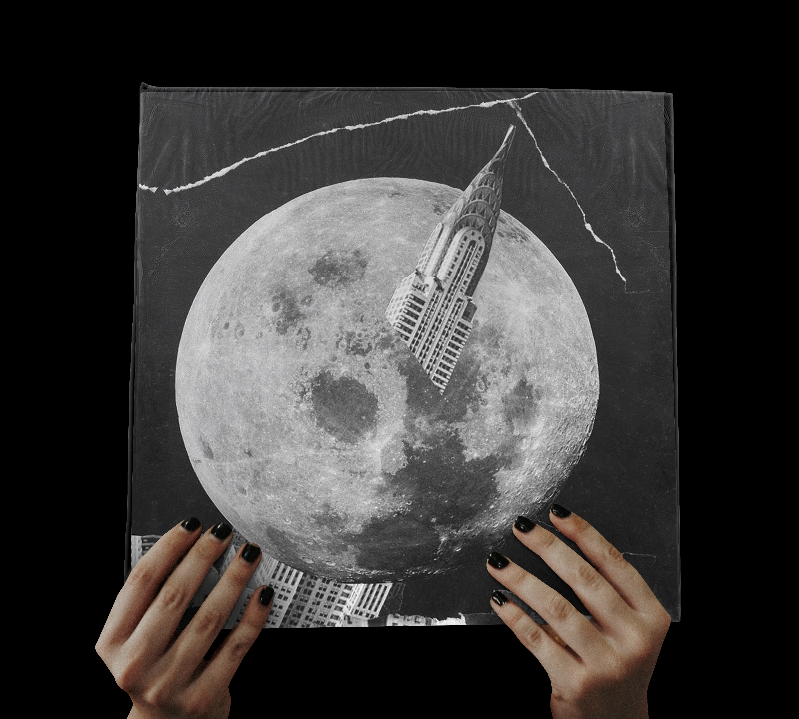
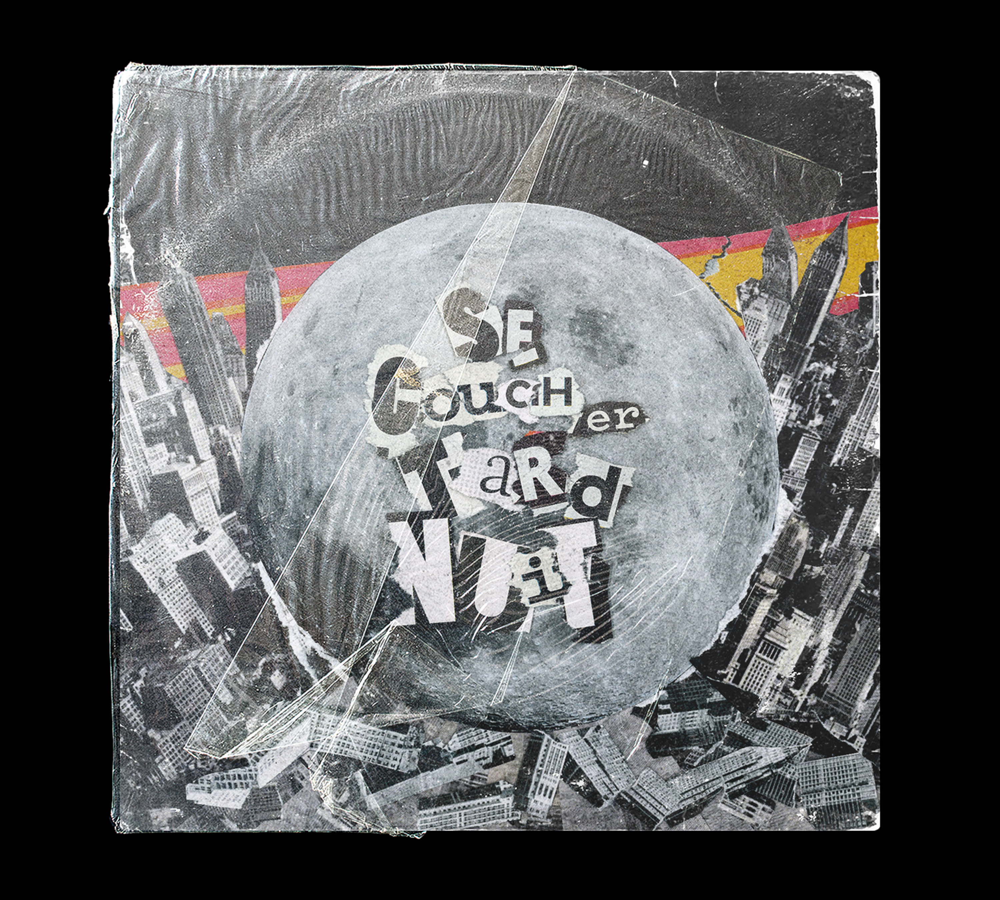

"SE COUCHER TARD.NUIT""
Ces deux images ont pour but de representer une cover de vynile d'un son donné, ici :
"se coucher tard. nuit" de Raymond Devos
Elle reprennent toutes leux deux les codes de l'esthétiques punk. Une esthetiques fait à partir de peu de moyen dans le but de ne pas rentrer dans le système, à la manière de fanzines également issus de ce mouvement. Ces images sont faites de collages, de journaux etc. Le double sens du mot nuit est representé également par la lune qui nuit à la ville, comme la violence du crash sur la ville et de l'impact de celle-ci sur le building penché.
Ainsi, bien que ces deux visuels soient étroitements liés dans leurs codes, l’un rejoint l’esthétisme punk par le foisenement d’immeuble , la saturation du format et par les lettres arrachées dans les journaux pour former le titre (références aux pochettes de « Sex Pistoles » ou encore « The Partisans »). Quand à l’autre, bien plus épuré avec peu d’éléments suffit au message, l’image reste déstructurée et violente en référence avec la lune de G. Méliès.

 


